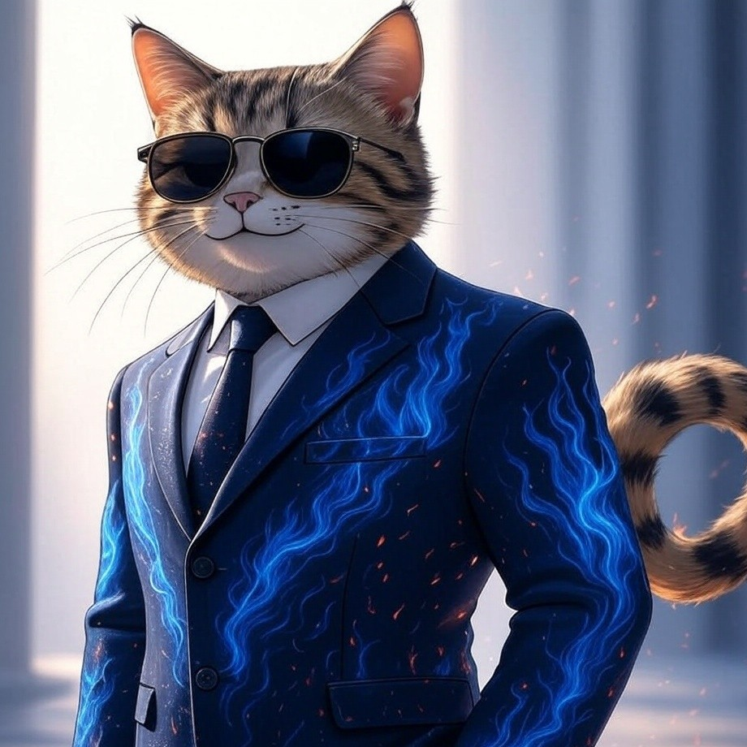

Cat Doe

Summary
Creative and detail-oriented Web Developer with a strong passion for coding, problem-solving, and building user-friendly digital experiences. Skilled in designing and developing responsive websites and web applications using modern technologies. Adept at collaborating with teams to deliver high-quality solutions that enhance functionality and aesthetics. Enthusiastic about continuous learning and applying innovative approaches to meet client and business needs.
Education
- Bachelor of Arts, Business Administration – University of California, Berkeley (2012–2016)
- Senior High School, Business & Accountancy Strand – Bronx High School of Science, New York (2010–2012)
- High School – Lincoln High School, Los Angeles (2006–2010)
- Grade School – St. Mary’s Academy, Portland (2000–2006)
Work Experience
- Customer Service Representative - ABC Inc.
- June 2016 – May 2019
- Assisted customers via phone, chat, and email regarding orders, returns, and product inquiries.
- Resolved billing and delivery issues, ensuring a positive customer experience.
- Consistently met or exceeded performance metrics, including response time and customer satisfaction scores.
- Documented customer interactions in CRM systems for accurate record-keeping.
- Administrative Assistant – Microsoft Corporation
- June 2016 – May 2019
- Coordinated executive schedules, meetings, and travel arrangements.
- Prepared and proofread internal documents, presentations, and reports.
- Managed office operations, including supplies, vendor communication, and filing systems.
- Assisted HR with onboarding new employees and maintaining personnel records.
Skills
- Proficient in HTML, CSS, and JavaScript – Strong foundation in front-end web development.
- Version Control (Git/GitHub) – Experienced in managing code repositories and collaborating with teams.
- Problem-Solving & Debugging – Skilled at identifying issues and implementing efficient solutions.
Achievements
- Certified Web Developer – FreeCodeCamp (Completed Responsive Web Design and JavaScript Algorithms & Data Structures certifications)
- Top Performer Award – Web Development Bootcamp (Recognized for building the most innovative and user-friendly final project)
Other